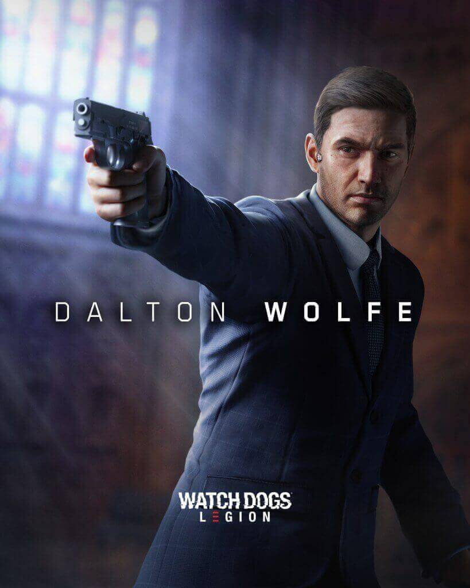
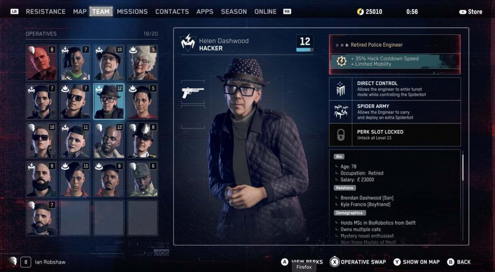
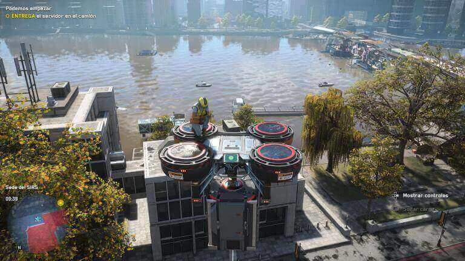
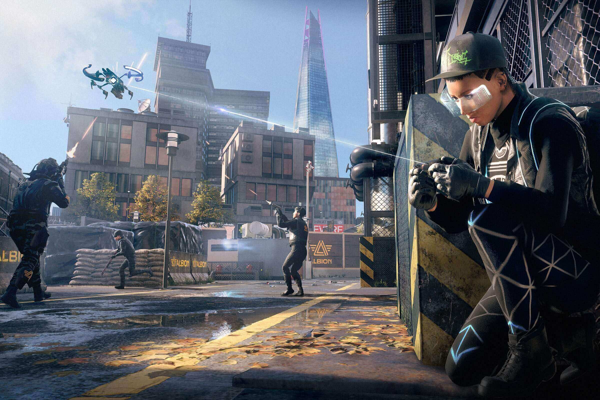

Watch Dogs: Legion
Aviso: Este análisis se ha hecho jugando solo la versión de PC
Ubisoft la tenía difícil con esta franquicia después de lo que ocurrió con el primer título, y aunque el segundo nos dejó ver un título con más calidad, Watch Dogs: Legion es el que llega a sentar las bases para algo que podría ser enorme a lo Assassin's Creed.
Después de dos juegos que pusieron en duda a los jugadores, Watch Dogs: Legion apuesta por una historia fresca, innovadora y que nos plantea lo terrible que puede ser un futuro donde la tecnología no sólo nos alcanzó, sino que nadie trató de controlarla.
Trailer
Una Ficción No Tan Alejada De La Realidad.
Watch Dogs: Legion plantea un futuro algo “incómodo” para las personas, por supuesto, a cambio de un beneficio: tener tecnología más autónoma y gadgets súper avanzados.
¿Quién no quisiera que los autos fueran 100% autónomos? Para… eso ya está pasando. Ok, qué tal esto: ¿Quién no quisiera unos anteojos conectados a internet? Esperen… eso tambien.
Imaginate que ahora tuvieras todo eso y mucho más, solamente que a cambio estarías dándole a las empresas un completo acceso a todas tus actividades. Es un precio relativamente bajo y ya lo haces ¿No? Ok, no.
Pero fuera de broma, WD: Legion plantea algo similar, un futuro donde la tecnología hizo la vida para todos más cómoda, pero a cambio, están vigilados por la misma tecnología 24 horas al día. Cómo duermen, con quién hablan, con quién chatean, todo está vigilado.

El lado malo de una tecnología tan buena.
Claro, esto también tiene ciertos beneficios, como una ciudad más segura donde el crimen es casi imposible debido a la alta concentración de cámaras, pero aún así, hay quienes creen que este avance de la tecnología no debería ser tan descontrolado.
Es acá donde entran los miembros del grupo DedSec, un grupo de hackers reconocidos a nivel mundial liderado por Sabine Brandt que actúan bajo sus propias reglas y bajo su propio código ¿Qué buscan? Liberar a todas las personas y darles su privacidad y libertad de vuelta.
El juego comienza infiltrándonos al más puro estilo del espionaje inglés. Tomamos el control de Dalton, un miembro muy hábil de DedSec que ahora tiene que investigar un atentado terrorista en el parlamento de Londres.

Es una gran misión y un gran prólogo para contarnos una terrible tragedia: ¡Todo es una trampa! Y aquí es donde las cosas toman forma de maneras que, aunque pueden sonar cliché, son un perfecto móvil para presumir la variedad que tiene el juego.
Somos DedSec.
Si bien sabemos que en los dos primeros títulos los protagonistas son fijos y su conexión con DedSec es un gran motivo para seguirlos, aquí las cosas son diferentes.
Advertencia de spoiler
Apenas terminemos el prólogo nos olvidaremos de Dalton, pues es acribillado y nos damos cuenta de que hemos sido atraídos hacia una trampa por otro grupo de personas que quiere tomar el control completo de la seguridad de toda Londres.
Lo bueno y lo copado de Legion es que cumple con lo que prometía en los tráilers: una gran variedad de personajes para elegir.
Debido a que ahora este grupo que quería el bien del país ha quedado expuesto como una amenaza terrorista, será nuestro deber encontrar y reclutar a otras personas que quieran unirse a la causa, y todos ellos cuentan con habilidades diferentes que nos podrán ayudar en el camino.

Por ejemplo, algunos funcionan como trabajadores para ciertos edificios, y ésto les permite entrar y salir de algunas áreas sin levantar sospechas y otros, por ejemplo, tienen acceso a vehículos para moverse más rápido.
Algunos otros personajes tienen habilidades de hackeo más eficientes, un mejor control de las armas o cuentan con gadgets/drones especiales que resultan ser de bastante utilidad.

Tengo que decir que esto está muy bien logrado y que realmente es una estrellita en la frente para Ubisoft, ya que lograron cumplir con lo que tanto presumían en sus tráilers.
Esto no es Grand Theft Auto.
Creo que Watch Dogs, desde las secuelas que dejó con el primer título, le costó un poco alejarse de las comparaciones inevitables -y absurdas- con GTA, y cómo no hacerlo, si ellos mismos trataron de ponérsele de frente a GTA V.
En fin. Algo que pasaba en el primer juego es que el hackeo podía quedar completamente de lado si querías jugarlo al más puro estilo de Rambo repartiendo plomo, y me decepcioné; en el segundo juego lo mejoraron añadiendo unidades refuerzos casi infinitos en los tiroteos, y eso se pulió.

Si bien está permitido el uso de la violencia física y con armas, la mayor de ellas sigue siendo la inteligencia. Por ejemplo, podes iniciar un tiroteo, pero si no te encargas de aquellos personajes que pueden pedir refuerzos, la vas a pasar muy mal (creeme).
Ahora, con esto no quiero decir que la acción quede de lado. Una de las cosas que mejor se lograron en este apartado son las persecuciones.
¿Te acordás que te dije que toda la ciudad estaba siendo vigilada? Acá no hay gran tema con que tomes un auto “prestado”, el problema es cuando tengas que huir después de tomar un vehículo, ya que deberás tener cuidado con tus perseguidores, los drones y las cámaras de seguridad.
Un Juego Que Se Respeta a Sí Mismo
Finalmente, nos encontramos con un juego sólido que, si bien tiene algunos errores (no graves, debo aclarar), logra hacerlo bastante bien para recuperar la confianza de los fans de esta franquicia. He de decir que no es perfecto, pero que se sale con la suya a la hora de enviciarnos con la gran unión de sus apartados sonoros, gráficos y a nivel jugabilidad.
Además de todo lo anterior, se arriesga con temas controversiales como el terrorismo, la invación de la privacidad, los inmigrantes, privilegios y más, no viéndose tibio ni yéndose por un lado más “relajado” de temas que no deberían serlo.
Para jugarlo en PC Encontralo en